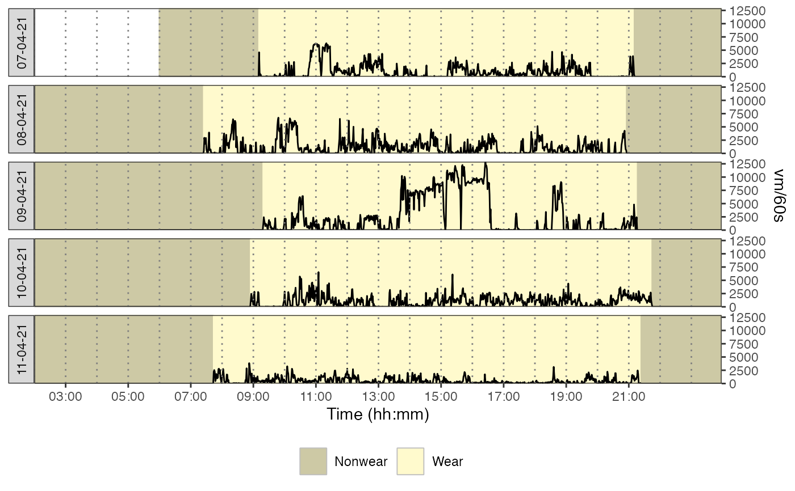

This function plots accelerometer data against time for each day of measurement, with the possibility to specify the metric to visualize.
Usage
plot_data(
data,
metric = "axis1",
col_time = "time",
col_nonwear = "non_wearing_count",
ehcv = 15000,
col_wear = "wearing_count",
zoom_from = "00:00:00",
zoom_to = "23:59:59"
)Arguments
- data
A dataframe obtained using the
prepare_datasetand then themark_wear_timefunctions.- metric
A character value to indicate the name of the variable to be plotted against time.
- col_time
A character value to indicate the name of the variable to plot time data.
- col_nonwear
A character value to indicate the name of the variable used to count nonwear time.
- ehcv
A numeric value to set the threshold above which vertical axis data should be considered as extremely high (abnormal). The value should be in counts/min.
- col_wear
A character value to indicate the name of the variable used to count wear time.
- zoom_from
A character value with the HH:MM:SS format to set the start of the daily period to visualize.
- zoom_to
A character value with the HH:MM:SS format to set the end of the daily period to visualize.
Examples
file <- system.file("extdata", "acc.agd", package = "activAnalyzer")
mydata <- prepare_dataset(data = file)
mydata_with_wear_marks <- mark_wear_time(
dataset = mydata,
TS = "TimeStamp",
to_epoch = 60,
cts = "vm",
frame = 90,
allowanceFrame = 2,
streamFrame = 30
)
#> frame is 90
#> streamFrame is 30
#> allowanceFrame is 2
plot_data(
data = mydata_with_wear_marks,
metric = "vm",
col_time = "time",
col_nonwear = "non_wearing_count",
col_wear = "wearing_count",
ehcv = 15000,
zoom_from = "02:00:00",
zoom_to = "23:58:00"
)
